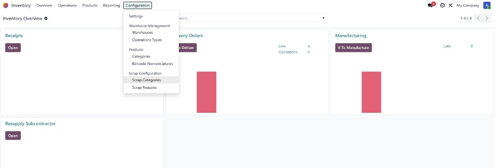
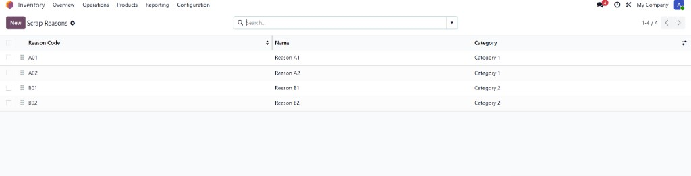
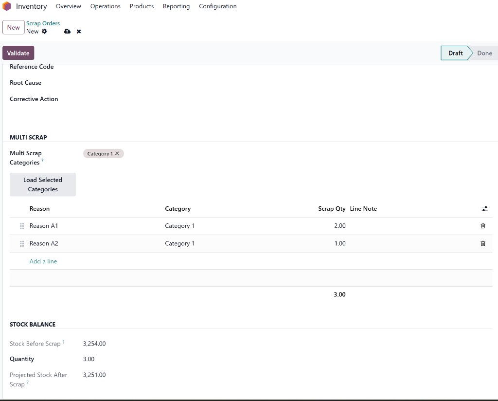
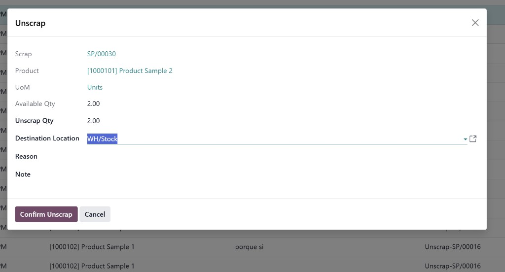
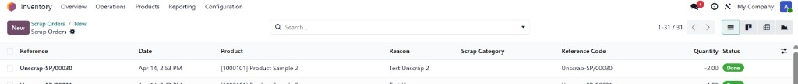

Multi Scrap & Unscrap Management
Advanced scrap governance for Odoo Inventory and Manufacturing.
Odoo 18
Inventory
Manufacturing
Armonia
Business Value
Standardize scrap and reversal operations with traceability, governance, and operator-friendly screens. Designed for plants and warehouses that need reliable quality tracking.
1Reason per category link
2Flows: Scrap + Unscrap
100%Traceable reversals
Core Features
Scrap Governance
- Scrap Categories and Scrap Reasons setup from Inventory Configuration.
- Each reason linked to one category for clean governance.
- Single-reason and multi-reason scrap in one operational form.
- Category-based reason loading for fast entry.
Split Validation
- Split one scrap into multiple reasons with strict qty validation.
- Prevents mismatches between total split and scrap quantity.
- Improves consistency for quality and cost analysis.
Unscrap Control
- Unscrap wizard with mandatory Reason.
- Supports partial or full quantity reversal.
- Prevents invalid repeated reversals.
- Creates references with Unscrap- format.
Operational Visibility
- Unified list columns: Reason, Scrap Category, Quantity, Status.
- Unscrap reasons shown in the same Reason column.
- Extra fields: Reference Code, Root Cause, Corrective Action.
- Projected stock balance before and after scrap.
Configuration & Workflow
Setup
- Inventory > Configuration > Scrap Configuration.
- Create Scrap Categories.
- Create Scrap Reasons and assign category.
Scrap + Unscrap Operations
- Create scrap with direct reason or split by multiple reasons.
- Validate scrap with quantity controls.
- Run Unscrap from done records with mandatory reason in wizard.
- Review complete audit trail in Unscrap history lines.
Support
Module developed and maintained by Armonia.
- Support email: le.contino@gmail.com
- Compatible edition: Odoo 18 (this package)
- Also available: Odoo 19 edition
Tip: include your own screenshots under static/description to enrich your Apps listing visuals.
Screenshots - Scrap Setup



Screenshots - Scrap Operations



Screenshots - Unscrap


